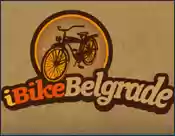
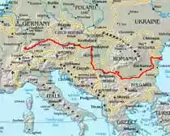

SRBIJA
Dolazak
Avion
 Nacionalni avio-prevoznik Jat Airways i brojne strane avio kompanije održavaju redovne linije sa tri međunarodna aerodroma u Beogradu, Nišu
i Prištini sa celim svetom. Sve veći broj niskobudžetnih avio-kompanija takođe leti sa srpskih aerodroma.
Nacionalni avio-prevoznik Jat Airways i brojne strane avio kompanije održavaju redovne linije sa tri međunarodna aerodroma u Beogradu, Nišu
i Prištini sa celim svetom. Sve veći broj niskobudžetnih avio-kompanija takođe leti sa srpskih aerodroma.
Automobil
Srbija se nalazi na panevropskom koridoru 10, koji je najkraća veza zapadnog i najjužnijeg dela Evrope i povezuje direktno osam zemalja: Austriju,
Sloveniju, Hrvatsku, Mađarsku, Srbiju, Bugarsku, Makedoniju i Grčku. U Beogradu se ukrštaju evropski putevi E-70 i E-75, kod Niša E-75 i E-80,
a u Prištini E-80 i E-65.
Glavni putni pravci u Srbiji su:
- Iz pravca severa, od granice sa Mađarskom, put E-75: Horgoš – Subotica – Novi Sad – Beograd – Niš – Vranje – Preševo i dalje ka Makedoniji
- Iz pravca zapada, od granice sa Hrvatskom, put E-70: Batrovci – Sremska Mitrovica – Beograd – Pančevo – Vršac – Vatin i dalje ka Rumuniji
- Iz pravca istoka, od granice sa Bugarskom, put E-80: Gradina – Dimitrovgrad – Pirot – Niš – Prokuplje – Priština – Kosovska Mitrovica – Mehov Krš i dalje ka Crnoj Gori
Za ulazak u Srbiju, vozačima motornih vozila sa stranim registarskim tablicama potrebni su:
- nacionalna vozačka dozvola
- saobraćajna dozvola vozila (uz dozvolu za upravljanje tuđim vozilom, po potrebi)
- polisa osiguranja (zelena karta)
Autobus
Srbija se nalazi na raskrsnici puteva Istočne i Zapadne Evrope koji moravsko-vardarskom i nišavsko-maričkom dolinom vode na obale Egejskog mora,
u Malu Aziju i na Bliski istok.
Redovne autobuske linije povezuju Srbiju sa svim susednim balkanskim zemljama i većinom srednjeevropskih i zapadnoevropskih zemalja. Takođe je
razgranata i mreža autobuskih linija između svih mesta u Srbiji.
Brod
Unutrašnje plovne puteve Srbije, na kojima važi međunarodni ili međudržavni režim plovidbe, čine reke:
- Dunav, u dužini od 588 km
- Sava, u dužini od 198,6 km
- Tisa, u dužini od 164 km
Reka Dunav predstavlja evropski saobraćajni koridor 7.
Lučke kapetanije pružaju informacije i uputstva o stanju plovnog puta, plovidbi kroz kanalsku mrežu Dunav – Tisa – Dunav, plovidbi kroz prevodnice
Hidroelektrane „Đerdap“, plovidbi u pograničnom pojasu, granične i carinske formalnosti i uputstva o proceduri isplovljavanja iz teritorijalnih
voda Srbije i uplovljavanja u strane teritorijalne vode.
U toku zimskih perioda pri pojavi leda, bezbednost plovila je ugrožena, pa je neophodno plovila skloniti sa otvorene reke na sigurna mesta –
zimovnike. Navigacioni period na Dunavu je od 1. marta do 25. decembra. U zimama bez leda plovidba je moguća, ali nije ekonomična zbog kratke
obdanice i niskog vodostaja. Dnevne izveštaje o vodostaju svakodnevno u 12.10 emituje Radio Beograd 1.
Na unutrašnje plovne puteve Srbije primenjuju se „Osnovne odredbe o plovidbi na Dunavu“, koje je donela Dunavska komisija 1990.
REČNI GRANIČNI PRELAZI:
- Bezdan – Mohacs
- Kanjiža – Szeged
- Veliko Gradište – Belobresca
- Donji Milanovac – Svinita
- Tekija – Orsova
- Kladovo – Turnu Severin
- Prahovo – Portile de Fior 1
Unutrašnji rečni granični prelazi: Apatin, Novi Sad i Beograd (Savsko pristanište)
Bicikl

Dunavska biciklistička ruta (DBR) kroz Srbiju nosi oznaku Eurovelo 6, što znači da se nalazi na trasi Atlantik – Crno more Evropske biciklističke
federacije (ECF).
Sistem putokaznih oznaka na DBR u Srbiji je po koncepciji i dizajnu jedinstven u odnosu na druge dunavske zemlje, a po pojedinim karakteristikama
je originalan i u evropskim razmerama. Putokazni sistem u Srbiji i štampana mapa „Kartografije Huber“ su međusobno usklađeni i dopunjuju jedno
drugo. Zahvaljujući tome, Srbija je u domenu cikloturizma blizu nivoa dunavskih zemalja poput Nemačke i Austrije.
Biciklistički putokazi u Srbiji su deo projekta „Donauradweg“ pokrenutog od strane GTZ-a (Nemačka vladina agencija za tehničku saradnju), sa ciljem
da se putnicima na biciklu duž Dunava ponude sve potrebne informacije. Pored štampanih mapa, za „biciklistički“ Dunav od Budimpešte do ušća u Crno
more, postoji i obimni web-vodič na sajtovima Donauradweg (engleska i nemačka verzija) i Ciklonaut (srpska verzija).
DBR putokazi u Srbiji:
- obeležena dužina: glavna ruta 668 km, alternativni pravci i deturovi oko 370 km – ukupno oko 1040 km
- broj identifikovanih raskrsnica: oko 460
- broj putokaznih tabli: oko 950

Svaka identifikovana raskrsnica u Srbiji, od mađarske granice kod Bačkog Brega, do bugarske granice kod Negotina, ima svoj jedinstveni broj. Taj
broj je upisan i na štampanoj mapi i na putokaznoj tabli postavljenoj na datu raskrsnicu. Upoređivanjem brojeva na tablama i brojeva na mapi, lako
je utvrditi gde se cikloturista nalazi. Za označavanje distanci koristi se sistem glavnog i neposrednog cilja: u gornjoj liniji table je rastojanje
do glavnog cilja na predstojećoj deonici, a u donjoj je rastojanje do najbližeg mesta (ili najbliže karakteristične tačke).
Na DBR u Srbiji postoje tri osnovne kategorije:
- Glavna ruta - najlepša i najmirnija, ali podrazumeva i makadamske/zemljane delove po nasipima
- Alternativne rute – uvek po asfaltu, način da se zaobiđu neasfaltirane deonice na glavnoj ruti
- Deturovi – preporučene vožnje za one koji imaju vremena i volje da se odmaknu od Dunava
Putokazne table za ove kategorije razlikuju se po bojama info-polja, usklađenim sa bojama linija u štampanoj mapi. Info-polja sadrže lepe misli
vezane za biciklizam ili filozofiju putovanja, istraživanja, otkrivanja…
Pored velikih informativnih tabli na srpskom i engleskom jeziku na deset graničnih prelaza duž Dunava, postavljene su i table u Novom Sadu (na
keju kod Petrovaradinskog mosta), u Beogradu (kod hotela „Jugoslavija“ i na Savskom pristaništu), u Velikom Gradištu (pristanište), kao i na ulazu
u Donji Milanovac.
Voz
Srbija se nalazi na evropskom saobraćajnom koridoru 10, tako da je razgranata mreža železničkih pruga povezuje sa svim delovima Evrope, brojnim
međunarodnim dnevnim i noćnim vozovima.
„Železnice Srbije“ pružaju sledeće komercijalne povlastice: Interail, Euro Domino, Railplus, Balkan Flexipass, Easy Travel Card, Euro<26, City
Star, ISIC, Jedinstvena balkanska tarifa, kao i popusti za grupe i decu.